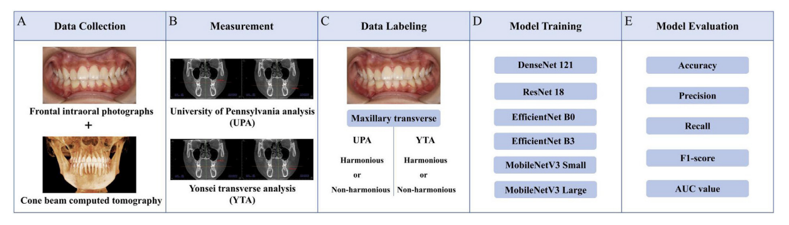
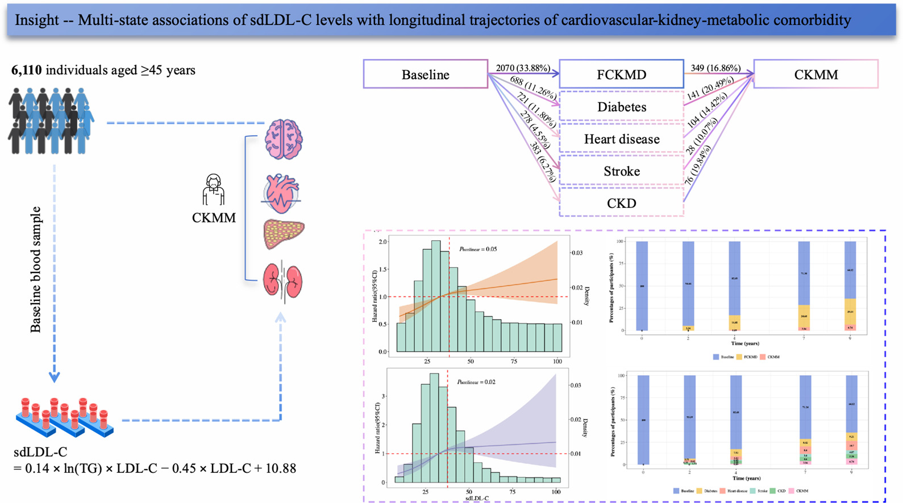

Comparing Deep Learning Models for Identifying Maxillary Transverse Deficiency from Intraoral Photographs
International Dental Journal, 76(4), 109689 · 2026 (JCR Q1)
PhD student in Cyberspace Security
Harbin Institute of Technology
My research focuses on cognitive security and multimodal sentiment analysis. I study how opinions, emotions, and group polarization develop across online communities, and have also worked on multimodal learning with incomplete clinical data and medical image analysis.
ritawang97@outlook.com
# Equal contribution * Corresponding author

International Dental Journal, 76(4), 109689 · 2026 (JCR Q1)

Doctor of Philosophy in Cyberspace Security
Master of Science in Electrical and Electronics Engineering
With DistinctionBachelor of Engineering in Automation
Research Intern
Built cross-platform social media event datasets and studied stance shifts, emotional accumulation, and group polarization to identify cognitive risks.
Research Assistant
Developed survival prediction models combining radiology, pathology, genomic, and demographic data, using modality dropout and feature reconstruction to handle missing modalities.
Intern
Investigated cardio-kidney-metabolic disease trajectories and deep learning for orthodontic screening, contributing first- and co-first-author papers to Maturitas and International Dental Journal.
China Information Technology Designing & Consulting Institute
Algorithm Engineering Intern
Developed surgical scheduling algorithms with NSGA-III and reinforcement learning to allocate operating-room resources under changing constraints and emergency demand.
Research Assistant
Reproduced PathFinder and CEBRA to study liver cancer prognostic biomarkers and decode visual cortical activity in mice.
Data Support Intern
Analyzed Global Burden of Disease data, built medical knowledge graphs, and supported the development and expert review of medical data standards.